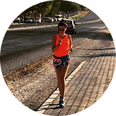

Не знала, що собі купити – звернулася до хлопців із RunSmart – підібрали пульсометр, який підійшов саме під мої цілі та фінансові можливості.
Через деякий час вирішила оновити гаджет – не роздумуючи звернулася туди ж.
Нові цілі – новий гаджет!
Дякую, RunSmart!
Іван Сьомочкін
1 напівмарафон
Крута штука-пульсометр. Зазвичай без них бігав. Виявляється, тільки гірше собі робив.
Купив пульсометр, ще в подарунок отримав тренування. Зі мною разом провели перше тренування, навчили користуватися новим гаджетом. Також пояснили основи анатомії, склали план тренувань на місяць уперед.
З ними підготувався до свого першого півмарафону! Дякую!!!

Юлія Дашкіна
2 напівмарафони
Довго не могла почати бігати, так як раніше кілька разів починала, але ставало важко і я кидала. Від друзів почула про RunSmart і про біг із контролем пульсу і вирішила спробувати.
Подзвонила, хлопці поцікавилися моїми цілями та підібрали дуже цікавий варіант зі знижкою! Тепер бігаю і насолоджуюся бігом! Пробігла вже 2 півмарафони і кілька коротших забігів і не має наміру зупинятися!